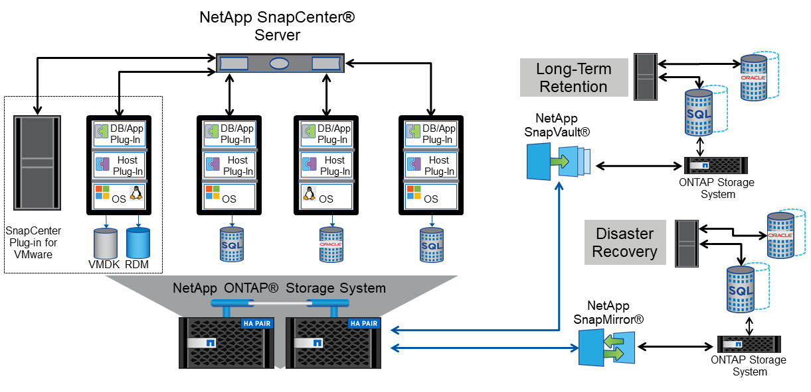
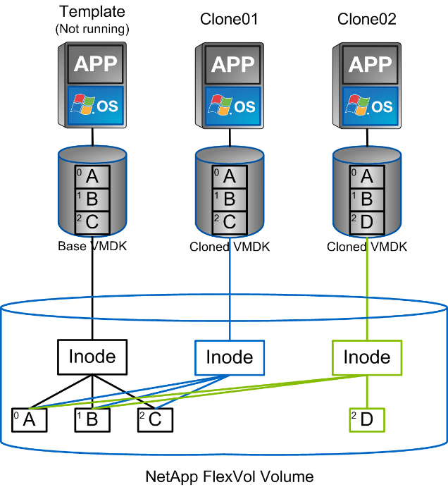

vSphere 向けのその他の機能
寄稿者
データ保護
VM のバックアップと迅速なリカバリは、 ONTAP for vSphere の大きな特長の 1 つです。この機能は、 SnapCenter Plug-in for VMware vSphere を使用して vCenter 内で簡単に管理できます。Snapshot コピーを使用すると、パフォーマンスに影響を与えることなく VM やデータストアのコピーをすばやく作成し、 SnapMirror を使用してセカンダリシステムに送信し、長期にわたるオフサイトでのデータ保護を実現できます。このアプローチでは、変更された情報のみを格納することで、ストレージスペースとネットワーク帯域幅を最小限に抑えます。
SnapCenter では、複数のジョブに適用可能なバックアップポリシーを作成できます。これらのポリシーでは、スケジュール、保持、レプリケーションなどの機能を定義できます。VMware スナップショットを作成する前に、ハイパーバイザの機能を活用して I/O を休止する、オプションの VM 整合性スナップショットを選択できます。ただし、 VMware スナップショットはパフォーマンスへの影響があるため、ゲストファイルシステムを休止する必要がないかぎり、一般には推奨されません。代わりに、 ONTAP の Snapshot コピーを使用して一般的な保護を行い、 SnapCenter プラグインなどのアプリケーションツールを使用して SQL Server や Oracle などのトランザクションデータを保護します。これらの Snapshot コピーは VMware （整合性） Snapshot とは別のものであり、長期的な保護に適しています。VMware スナップショットはのみです "（推奨）" パフォーマンスやその他の影響があるため、短期的な使用に適しています。
これらのプラグインは、物理環境と仮想環境の両方でデータベースを保護する拡張機能を提供します。vSphere では、これらのプロトコルを使用して、 RDM LUN 、ゲスト OS に直接接続された iSCSI LUN 、 VMFS または NFS データストア上の VMDK ファイルにデータが格納されている SQL Server または Oracle データベースを保護できます。プラグインでは、さまざまなタイプのデータベースバックアップを指定し、オンラインまたはオフラインのバックアップをサポートし、ログファイルとともにデータベースファイルを保護できます。プラグインは、バックアップとリカバリに加えて、開発やテスト目的でのデータベースのクローニングにも対応しています。
次の図は、 SnapCenter の導入例を示しています。

ディザスタリカバリ機能を強化するには、 ONTAP 用 NetApp SRA と VMware Site Recovery Manager の使用を検討してください。DR サイトへのデータストアのレプリケーションをサポートするだけでなく、レプリケートしたデータストアをクローニングすることで DR 環境を無停止でテストすることもできます。SRA に組み込まれている自動化機能を使用すると、災害からのリカバリや、システム停止が解決したあとの本番環境の再保護も簡単に実行できます。
最後に、最高レベルのデータ保護を実現するために、 NetApp MetroCluster を使用した VMware vSphere Metro Storage Cluster （ vMSC ）設定を検討してください。vMSC は、同期レプリケーションとアレイベースのクラスタリングを組み合わせた VMware 認定の解決策です。高可用性クラスタと同じメリットを提供しますが、複数のサイトに分散してサイト障害から保護します。NetApp MetroCluster は、同期レプリケーション向けの対費用効果の高い構成を提供します。ストレージコンポーネントのあらゆる単一障害から透過的にリカバリでき、サイト障害時にコマンド 1 つでリカバリできます。vMSC の詳細については、を参照してください "TR-4128"。
スペース再生
VM がデータストアから削除されたときに、他の目的でスペースを再生することができます。NFS データストアを使用している場合、 VM が削除されるとすぐにスペースが再生されます（もちろん、このアプローチはボリュームがシンプロビジョニングされている場合、つまりボリュームギャランティが none に設定されている場合にのみ有効です）。ただし、 VM のゲスト OS 内でファイルが削除されても、 NFS データストアではスペースが自動的に再生されません。LUN ベースの VMFS データストアの場合、 ESXi およびゲスト OS は、問題 VAAI UNMAP プリミティブをストレージに（シンプロビジョニングを使用している場合に）再利用できます。リリースによっては、このサポートは手動と自動のどちらかになります。
vSphere 5.5 以降では、 vmkfstools – y コマンドに代わって、空きブロック数を指定する esxcli storage vmfs unmap コマンドが使用されます（ VMware KB を参照） "2057513" 詳細については、を参照してください）。vSphere 6.5 以降では、 VMFS 6 を使用している場合、スペースは自動的に非同期で再利用される必要があります（を参照） vSphere のドキュメントを参照）。ただし、必要に応じて手動で実行することもできます。この自動マッピング解除は ONTAP でサポートされ、 VMware vSphere 用の ONTAP ツールでは低優先度に設定されます。
VM とデータストアのクローニング
ストレージオブジェクトをクローニングすると、追加の VM のプロビジョニングやバックアップ / リカバリ処理などの用途に使用できるコピーを簡単に作成できます。vSphere では、 VM 、仮想ディスク、 VVOL 、またはデータストアをクローニングできます。クローニングされたオブジェクトは、多くの場合、自動化されたプロセスによってさらにカスタマイズできます。vSphere では、フルコピークローンとリンククローンの両方がサポートされます。リンククローンでは、元のオブジェクトとは別に変更が追跡されます。
リンククローンはスペースを節約するのに適していますが、 vSphere が VM に対して処理する I/O 量が増えるため、その VM のパフォーマンスや場合によってはホスト全体のパフォーマンスに影響します。そのため、 NetApp のお客様は、ストレージシステムベースのクローンを使用して、ストレージの効率的な使用とパフォーマンスの向上という両方のメリットを得ることがよくあります。
次の図は、 ONTAP クローニングを示しています。

クローニングは、 ONTAP ソフトウェアを実行するシステムに複数のメカニズムを使用してオフロードできます。通常は、 VM 、 VVol 、データストアのレベルでオフロードします。これには次のものが含まれます。
-
NetApp vSphere APIs for Storage Awareness （ VASA ） Provider を使用した VVol のクローニング。ONTAP クローンは、 vCenter で管理される VVol Snapshot コピーをサポートするために使用されます。 VVol Snapshot コピーはスペース効率に優れており、作成や削除の I/O の影響を最小限に抑えることができます。VM のクローニングは vCenter を使用して行うこともでき、 1 つのデータストア / ボリューム内かデータストア / ボリューム間かに関係なく、 ONTAP にオフロードされます。
-
vSphere APIs – Array Integration （ VAAI ）を使用した vSphere のクローニングと移行：SAN 環境と NAS 環境の両方で、 VM のクローニング処理を ONTAP にオフロードできます（ネットアップでは、 NFS 用の VAAI を有効にするために ESXi プラグインを提供しています）。vSphere は、 NAS データストア内のコールド（電源オフ） VM にのみオフロードします。一方、ホット VM （クローニングと Storage vMotion ）の処理も SAN にオフロードされます。ONTAP では、ソース、デスティネーション、インストールされている製品ライセンスに基づいて最も効率的なアプローチを採用しています。この機能は VMware Horizon View でも使用されています。
-
SRA （ VMware Site Recovery Manager で使用）。ここでは、クローンを使用して、 DR レプリカのリカバリを無停止でテストします。
-
SnapCenter などのネットアップのツールを使用したバックアップとリカバリVM クローンは、バックアップ処理の検証や VM バックアップのマウントに使用され、個々のファイルをコピーできるようにします。
ONTAP オフロードクローニングは、 VMware 、ネットアップ、サードパーティのツールから実行できます。ONTAP にオフロードされたクローンには、いくつかのメリットがあります。ほとんどの場合、スペース効率に優れており、オブジェクトの変更にのみ対応するストレージが必要です。読み取りや書き込みのパフォーマンスには影響しません。また、高速キャッシュでブロックを共有することでパフォーマンスが向上する場合もあります。また、 CPU サイクルとネットワーク I/O も ESXi サーバからオフロードされます。FlexVol を使用する従来のデータストア内でのコピーオフロードは、 FlexClone ライセンスを使用すると高速かつ効率的ですが、 FlexVol 間のコピーの方が低速になる可能性があります。VM テンプレートをクローンのソースとして管理する場合は、スペース効率に優れた高速クローンを作成するために、テンプレートをデータストアボリューム内に配置することを検討してください（フォルダやコンテンツライブラリを使用してテンプレートを整理します）。
ONTAP 内で直接ボリュームまたは LUN をクローニングして、データストアをクローニングすることもできます。NFS データストアの場合は、 FlexClone テクノロジでボリューム全体をクローニングし、 ONTAP からクローンをエクスポートして、別のデータストアとして ESXi にマウントできます。VMFS データストアの場合は、ボリューム内の LUN 、または 1 つ以上の LUN を含むボリューム全体を ONTAP でクローニングできます。VMFS を含む LUN を通常のデータストアとしてマウントして使用するためには、 LUN を ESXi igroup にマッピングし、 ESXi から再署名を受ける必要があります。ただし一部の一時的なユースケースでは、クローニングされた VMFS を再署名なしでマウントすることができます。クローニングしたデータストア内の VM は、個別にクローニングした VM と同様に登録、再設定、およびカスタマイズすることができます。
バックアップや FlexClone 用の SnapRestore など、追加のライセンス機能を使用してクローニングを強化できる場合があります。これらのライセンスは、追加コストなしでライセンスバンドルに含まれていることがよくあります。FlexClone ライセンスは、 VVOL のクローニング処理、および VVOL の管理対象 Snapshot コピー（ハイパーバイザーから ONTAP にオフロード）をサポートするために必要です。FlexClone をデータストア / ボリューム内で使用すると、特定の VAAI ベースのクローンの品質を向上させることもできます（ブロックコピーではなく、スペース効率に優れたコピーが瞬時に作成されます）。また、 DR レプリカのリカバリをテストする際に SRA で使用され、クローニング処理用に SnapCenter でバックアップコピーを参照して個々のファイルをリストアする際にも使用されます。
ストレージ効率とシンプロビジョニング
ネットアップは、プライマリワークロードに初めて重複排除を適用するなどの Storage Efficiency の革新的なテクノロジを業界でリードしてきました。インラインデータコンパクションは、圧縮機能を強化し、小さなファイルと I/O を効率的に格納する機能です。ONTAP は、インライン重複排除とバックグラウンド重複排除のほか、インライン圧縮とバックグラウンド圧縮の両方をサポートしています。
次の図は、 ONTAP の Storage Efficiency 機能の効果を組み合わせたものです。

vSphere 環境で ONTAP の Storage Efficiency 機能を使用する際の推奨事項を次に示します。
-
重複排除によって削減されるデータ量は、データにどれくらい共通部分があるかによって異なります。ONTAP 9.1 以前では、データ重複排除はボリュームレベルで機能しましたが、 ONTAP 9.2 以降のアグリゲート重複排除では、 AFF システムのアグリゲート内のすべてのボリュームのデータが重複排除されます。削減効果を最大化するために、類似するオペレーティングシステムやアプリケーションを 1 つのデータストア内にグループ化する必要はなくなりました。
-
ブロック環境で重複排除のメリットを実現するには、 LUN をシンプロビジョニングする必要があります。VM 管理者からは引き続き LUN がプロビジョニング済み容量として認識されますが、重複排除による削減効果は他のニーズに使用できるようにボリュームに戻されます。これらの LUN は、シンプロビジョニングされた FlexVol ボリュームに導入することを推奨します（ VMware vSphere 用の ONTAP ツールでは、ボリュームのサイズが LUN よりも約 5% 大きくなるように設定しています）。
-
NFS FlexVol ボリュームにはシンプロビジョニングも推奨されます（デフォルトです）。NFS 環境では、シンプロビジョニングされたボリュームを使用しているストレージ管理者と VM 管理者の両方に、重複排除による削減効果がすぐに反映されます。
-
シンプロビジョニング環境 VM も同様です。ネットアップでは、一般にシックプロビジョニングではなくシンプロビジョニングされた VMDK を推奨しています。シンプロビジョニングを使用する場合は、スペース不足の問題を回避するために、 VMware vSphere 、 ONTAP 、またはその他の使用可能なツール用の ONTAP ツールで利用可能なスペースを監視してください。
-
ONTAP システムでシンプロビジョニングを使用した場合はパフォーマンスが低下しないことに注意してください。データは使用可能なスペースに書き込まれるため、書き込みパフォーマンスと読み取りパフォーマンスが最大限に高まります。この事実にもかかわらず、 Microsoft フェイルオーバークラスタリングやその他の低レイテンシアプリケーションなどの一部の製品では、保証されたプロビジョニングや固定プロビジョニングが必要になる場合があります。また、サポートの問題を回避するには、これらの要件に従うことを推奨します。
-
重複排除による削減効果を最大限に高めるために、ハードディスクベースのシステムでのバックグラウンド重複排除または AFF システムでの自動バックグラウンド重複排除のスケジュールを設定することを検討してください。ただし、スケジュールされたプロセスは実行時にシステムリソースを使用するため、非アクティブな時間帯（週末など）にスケジュールを設定するか、より頻繁に実行して処理される変更データの量を減らすことが理想的です。AFF システムでの自動バックグラウンド重複排除は、フォアグラウンドアクティビティへの影響を大幅に軽減します。バックグラウンド圧縮（ハードディスクベースのシステムの場合）でもリソースが消費されるため、パフォーマンス要件が限定されたセカンダリワークロードでのみ考慮する必要があります。
-
NetApp AFF システムは、主にインラインの Storage Efficiency 機能を使用します。7-Mode Transition Tool 、 SnapMirror 、ボリューム移動などのブロックレプリケーションを使用するネットアップのツールを使用してデータを移動する場合は、圧縮スキャナやコンパクションスキャナを実行して、効率化による削減効果を最大限に高めると効果的です。このネットアップサポートを確認してください "こちらの技術情報アーティクル" を参照してください。
-
圧縮や重複排除によって削減できるブロックが Snapshot コピーによってロックされる場合があります。スケジュールされたバックグラウンドの効率化スキャナまたはワンタイムスキャナを使用する場合は、次の Snapshot コピーが作成される前に、それらの効率化処理が実行および完了していることを確認してください。Snapshot コピーと保持設定を確認して、特にバックグラウンドジョブやスキャナジョブを実行する前に、必要な Snapshot コピーだけを保持していることを確認してください。
次の表に、さまざまなタイプの ONTAP ストレージ上にある仮想ワークロードのストレージ効率化のガイドラインを示します。
| ワークロード | Storage Efficiency に関するガイドライン | ||
|---|---|---|---|
AFF |
Flash Pool の機能です |
ハードディスクドライブ |
|
VDI および SVI |
プライマリワークロードとセカンダリワークロード：
|
プライマリワークロードとセカンダリワークロード：
|
プライマリワークロードには次の機能を使用：
セカンダリワークロードの場合：
|
サービス品質（ QoS ）
ONTAP ソフトウェアを実行するシステムでは、 ONTAP ストレージ QoS 機能を使用して、ファイル、 LUN 、ボリューム、 SVM 全体などの異なるストレージオブジェクトに対するスループットを MBps や IOPS （ 1 秒あたりの I/O 数）で制限できます。
スループット制限は、他のワークロードに影響しないように、導入前に不明なワークロードやテストワークロードを制御するのに役立ちます。また、 Bully ワークロードが特定された場合に、この 2 つを使用して抑制することもできます。ONTAP 9.2 では SAN オブジェクトに、 ONTAP 9.3 では NAS オブジェクトに一貫したパフォーマンスを提供するために、 IOPS に基づく最小サービスレベルもサポートされています。
NFS データストアの場合は、 QoS ポリシーを FlexVol 全体またはボリューム内の個々の VMDK ファイルに適用できます。ONTAP LUN を使用する VMFS データストアでは、 LUN を含む FlexVol ボリュームには QoS ポリシーを適用できますが、 ONTAP が VMFS ファイルシステムを認識しないため、個々の VMDK ファイルには適用できません。VVol を使用する場合は、ストレージ機能プロファイルと VM ストレージポリシーを使用して、個々の VM に最小 QoS と最大 QoS を設定できます。
オブジェクトに対する QoS の最大スループット制限は、 MBps と IOPS のいずれかまたは両方で設定できます。両方を使用する場合は、最初に到達した制限が ONTAP によって適用されます。ワークロードには複数のオブジェクトを含めることができ、 QoS ポリシーは 1 つ以上のワークロードに適用できます。ポリシーを複数のワークロードに適用した場合は、ポリシーの制限はワークロード全体に適用されます。ネストされたオブジェクトはサポートされません（たとえば、ボリューム内のファイルには個別のポリシーを設定することはできません）。QoS の最小値は IOPS 単位でのみ設定できます。
ONTAP QoS ポリシーの管理とオブジェクトへの適用に現在使用できるツールは次のとおりです。
-
ONTAP CLI
-
ONTAP システムマネージャ
-
OnCommand Workflow Automation のサポートを利用できます
-
Active IQ Unified Manager
-
NetApp PowerShell Toolkit for ONTAP 』を参照してください
-
VMware vSphere VASA Provider 用の ONTAP ツール
NFS 上の VMDK に QoS ポリシーを割り当てる場合は、次のガイドラインに注意してください。
-
ポリシーは 'vmname.vmdk （仮想ディスク記述子ファイル）や 'vmname.vmx （ VM 記述子ファイル）ではなく ' 実際の仮想ディスクイメージを含む 'vmname-flat.vmdk に適用する必要があります
-
仮想スワップ・ファイル（「 vmname.vswp 」）などの他の VM ファイルにはポリシーを適用しないでください。
-
vSphere Web クライアントを使用してファイルパスを検索する場合は、「 -flat.vmdk 」と「」の情報が結合されていることに注意してください。VMDK とは ' という名前のファイルを 1 つだけ示しますVMDK ですが '-flat.vmdk のサイズです正しいパスを取得するには、ファイル名に「 -flat」 を追加します。
VMFS と RDM 、 ONTAP SVM （ SVM として表示）、 LUN パス、シリアル番号などの LUN に QoS ポリシーを割り当てるには、 ONTAP Tools for VMware vSphere のホームページのストレージシステムメニューから QoS ポリシーを取得します。ストレージシステム（ SVM ）を選択し、 Related Objects > SAN の順に選択します。この方法は、いずれかの ONTAP ツールを使用して QoS を指定する場合に使用します。
VVol ベースの VM には、 VMware vSphere または Virtual Storage Console 7.1 以降の ONTAP ツールを使用して、最大 QoS と最小 QoS を簡単に割り当てることができます。VVol コンテナのストレージ機能プロファイルを作成するときは、パフォーマンス機能の下に最大 IOPS または最小 IOPS の値を指定し、この SCP を VM のストレージポリシーで参照します。このポリシーは VM を作成するときに使用するか、ポリシーを既存の VM に適用します。
FlexGroup データストアでは、 ONTAP ツールを VMware vSphere 9.8 以降で使用する場合に、 QoS 機能が強化されています。QoS は、データストア内のすべての VM 、または特定の VM に簡単に設定できます。詳細については、本レポートの「 FlexGroup 」セクションを参照してください。
ONTAP の QoS と VMware の SIOC
ONTAP の QoS と VMware vSphere の Storage I/O Control （ SIOC ）は、 vSphere 管理者とストレージ管理者が組み合わせて、 ONTAP ソフトウェアを実行するシステムでホストされる vSphere VM のパフォーマンスを管理できる、相互に補完するテクノロジです。各ツールには、次の表に示すようにそれぞれの長所があります。VMware vCenter と ONTAP ではスコープが異なるため、一部のオブジェクトは一方のシステムで認識および管理でき、もう一方のシステムではできません。
| プロパティ（ Property ） | ONTAP QoS | VMware SIOC |
|---|---|---|
アクティブになっている場合 |
ポリシーは常にアクティブです |
競合が発生している（データストアのレイテンシがしきい値を超えている）場合 |
単位のタイプ |
IOPS 、 MBps |
IOPS 、共有数 |
対象となる vCenter またはアプリケーション |
複数の vCenter 環境、その他のハイパーバイザーとアプリケーションがあります |
単一の vCenter サーバ |
VM に QoS を設定？ |
NFS 上の VMDK のみ |
NFS 上または VMFS 上の VMDK です |
LUN （ RDM ）で QoS を設定？ |
はい。 |
いいえ |
LUN （ VMFS ）への QoS の設定 |
はい。 |
いいえ |
ボリューム（ NFS データストア）への QoS の設定 |
はい。 |
いいえ |
SVM （テナント）に QoS を設定？ |
はい。 |
いいえ |
ポリシーベースのアプローチ |
はい。ポリシー内のすべてのワークロードで共有することも、ポリシー内の各ワークロードにフルに適用することもできます。 |
はい。 vSphere 6.5 以降が必要です。 |
ライセンスが必要です |
ONTAP に付属しています |
Enterprise Plus |
VMware Storage Distributed Resource Scheduler の略
VMware Storage Distributed Resource Scheduler （ SDRS ）は、現在の I/O レイテンシとスペース使用量に基づいて VM をストレージに配置する vSphere の機能です。その後、 VM や VMDK の配置先として最適なデータストアをデータストアクラスタ内から選択し、システムを停止することなくデータストアクラスタ（ポッドとも呼ばれます）内のデータストア間で VM や VMDK を移動します。データストアクラスタとは、類似したデータストアを vSphere 管理者の観点から単一の消費単位に集約したものです。
SDRS を NetApp ONTAP Tools for VMware vSphere と併用する場合は、まずプラグインを使用してデータストアを作成し、 vCenter を使用してデータストアクラスタを作成し、そこにデータストアを追加する必要があります。データストアクラスタを作成したら、プロビジョニングウィザードの詳細ページからデータストアクラスタにデータストアを直接追加できます。
SDRS に関するその他の ONTAP のベストプラクティスは、次のとおりです。
-
クラスタ内のすべてのデータストアで同じタイプのストレージ（ SAS 、 SATA 、 SSD など）を使用し、すべて VMFS データストアまたは NFS データストアとし、レプリケーションと保護の設定を同じにします。
-
デフォルト（手動）モードでは SDRS の使用を検討してください。このアプローチでは、推奨事項を確認し、適用するかどうかを決定できます。VMDK の移行による影響を次に示します。
-
SDRS がデータストア間で VMDK を移動すると、 ONTAP のクローニングや重複排除によるスペース削減効果は失われます。重複排除機能を再実行すれば、削減効果を取り戻すことができます。
-
SDRS で VMDK を移動したあとに、移動された VM によってスペースがロックされないように、ソースデータストアで Snapshot コピーを再作成することを推奨します。
-
同じアグリゲート上のデータストア間で VMDK を移動してもメリットはほとんどなく、 SDRS はアグリゲートを共有する可能性のある他のワークロードを可視化できません。
-
ストレージポリシーベースの管理と VVOL
VMware vSphere APIs for Storage Awareness （ VASA ）を使用すると、ストレージ管理者は、明確に定義された機能を使用してデータストアを簡単に設定でき、 VM 管理者は、相互にやり取りすることなく、いつでも VM をプロビジョニングするためのこれらの機能を使用できます。仮想化ストレージの運用を合理化し、複雑な作業を回避する方法を確認するには、このアプローチを検討することをお考えください。
VASA が導入される前は、 VM 管理者が VM ストレージポリシーを定義することもできましたが、適切なデータストアを特定するには、多くの場合、ドキュメントや命名規則を使用する必要がありました。VASA を使用すると、ストレージ管理者は、パフォーマンス、階層化、暗号化、レプリケーションなど、さまざまなストレージ機能を定義できます。1 つのボリュームまたはボリュームセットの一連の機能を、ストレージ機能プロファイル（ SCP ）と呼びます。
SCP は、 VM のデータ VVOL の最小および最大 QoS をサポートします。最小 QoS は AFF システムでのみサポートされます。VMware vSphere 用の ONTAP ツールには、 ONTAP システム上の VVOL の VM の詳細なパフォーマンスと論理容量を表示するダッシュボードがあります。
次の図は、 VMware vSphere 9.8 VVol ダッシュボード用の ONTAP ツールを示しています。

ストレージ機能プロファイルを定義したら、そのプロファイルを使用して要件を定義するストレージポリシーを使用して VM をプロビジョニングできます。vCenter では、 VM ストレージポリシーとデータストアストレージ機能プロファイルのマッピングに基づいて、互換性があるデータストアのリストを選択対象として表示できます。この方法のことをストレージポリシーベースの管理と呼びます。
VASA は、ストレージを照会して一連のストレージ機能を vCenter に返すためのテクノロジを提供します。VASA ベンダープロバイダは、ストレージシステムの API およびコンストラクトと、 vCenter が認識可能な VMware API との間の変換機能を提供します。ネットアップの VASA プロバイダ for ONTAP は、 VMware vSphere アプライアンス VM 用の ONTAP ツールの一部として提供されます。 vCenter プラグインは、 VVol データストアのプロビジョニングと管理のインターフェイスと、ストレージ機能プロファイル（ SCP ）の定義機能を提供します。
ONTAP は、 VMFS データストアと NFS データストアの両方をサポートしています。SAN データストアで VVOL を使用すると、 VM レベルのきめ細かさなど、 NFS のメリットの一部を活用できます。ここでは考慮すべきベストプラクティスをいくつか示します。また、追加情報はにあります "TR-4400"：
-
VVOL データストアは、複数のクラスタノードにある複数の FlexVol で構成できます。ボリュームごとに機能が異なる場合でも、最もシンプルなアプローチは 1 つのデータストアです。SPBM により、互換性のあるボリュームが VM に使用されています。ただし、すべてのボリュームが 1 つの ONTAP SVM に含まれていて、単一のプロトコルでアクセスできる必要があります。各プロトコルでノードごとに 1 つの LIF で十分です。1 つの VVOL データストアで複数の ONTAP リリースを使用することは避けてください。リリースによってストレージ機能が異なる場合があります。
-
VVol データストアの作成と管理には、 VMware vSphere プラグインの ONTAP ツールを使用します。データストアとそのプロファイルの管理に加え、必要に応じて、 VVOL にアクセスするためのプロトコルエンドポイントが自動的に作成されます。LUN を使用する場合、 LUN PE は 300 以上の LUN ID を使用してマッピングされます。ESXi ホストの詳細システム設定「 Disk .MaxLUN 」で 300 より大きい LUN ID 番号が許可されていることを確認します（デフォルトは 1 、 024 ）。この手順を実行するには、 vCenter で ESXi ホストを選択し、次に Configure タブを選択して、 Advanced System Settings のリストから「 Disk .MaxLUN 」を探します。
-
VASA Provider 、 vCenter Server （アプライアンスまたは Windows ベース）、または VMware vSphere 用の ONTAP ツールは相互に依存するため、 VVOL データストアにインストールしたり移行したりしないでください。これらのツールは、停電やその他のデータセンターの停止が発生した場合に管理しなくなるためです。
-
VASA Provider VM を定期的にバックアップします。VASA Provider が格納された従来のデータストアの Snapshot コピーを少なくとも 1 時間に 1 回は作成してください。VASA Provider の保護とリカバリの詳細については、こちらを参照してください "こちらの技術情報アーティクル"。
次の図は、 VVOL のコンポーネントを示しています。

クラウドへの移行とバックアップ
ONTAP のもう 1 つの強みは、ハイブリッドクラウドを幅広くサポートすることで、オンプレミスのプライベートクラウドのシステムとパブリッククラウドの機能を統合できることです。vSphere と組み合わせて使用できるネットアップのクラウドソリューションには、次のものがあります。
-
* Cloud Volume 。 * NetApp Cloud Volumes Service for AWS または GCP と Azure NetApp Files for ANF は、主要なパブリッククラウド環境でハイパフォーマンスなマルチプロトコルマネージドストレージサービスを提供します。VMware Cloud VM ゲストで直接使用できます。
-
* Cloud Volumes ONTAP 。 * NetApp Cloud Volumes ONTAP データ管理ソフトウェアは、お客様が選択したクラウド上のデータを管理、保護、柔軟性、効率性で保護します。Cloud Volumes ONTAP は、 NetApp ONTAP ストレージソフトウェアを基盤としたクラウドネイティブのデータ管理ソフトウェアです。Cloud Volumes ONTAP インスタンスをオンプレミスの ONTAP システムと一緒に導入、管理する際には、 Cloud Manager と組み合わせて使用できます。NAS および iSCSI SAN の高度な機能に加え、 Snapshot コピーや SnapMirror レプリケーションなどの統合データ管理機能も利用できます。
-
* Cloud Backup Service * 。クラウドサービスまたは SnapMirror クラウドを使用して、パブリッククラウドストレージを使用してオンプレミスシステムからデータを保護します。Cloud Sync を使用すると、 NAS 、オブジェクトストア、 Cloud Volumes Service ストレージ間でデータを移行し、同期を維持できます。
-
* ONTAP * FabricPool は、 FabricPool データの階層化を迅速かつ容易にします。Snapshot コピーのコールドブロックは、パブリッククラウドまたはプライベート StorageGRID オブジェクトストアのオブジェクトストアに移行でき、 ONTAP データが再びアクセスされると自動的にリコールされます。または、 SnapVault ですでに管理されているデータの第 3 レベルの保護としてオブジェクト階層を使用することもできます。この方法を使用すると、を実行できます "より多くの VM Snapshot コピーを格納する" プライマリおよびセカンダリ ONTAP ストレージシステム。
-
* ONTAP Select * 。ネットアップの Software-Defined Storage を使用して、インターネット経由でプライベートクラウドをリモートの施設やオフィスに拡張できます。 ONTAP Select を使用すれば、ブロックサービスやファイルサービスのほか、エンタープライズデータセンターと同じ vSphere データ管理機能をサポートできます。
VM ベースのアプリケーションを設計する際は、将来のクラウドのモビリティを考慮してください。たとえば、アプリケーションファイルとデータファイルを一緒に配置するのではなく、データ用に別の LUN または NFS エクスポートを使用します。これにより、 VM とデータを別々にクラウドサービスに移行できます。
vSphere データの暗号化
現在、保管データを暗号化で保護する必要性はますます高まっています。最初は財務情報と医療情報に重点を置いていましたが、ファイル、データベース、その他の種類のデータに保存されているすべての情報を保護することに関心が高まっています。
ONTAP ソフトウェアを実行するシステムでは、保存データの暗号化を使用してあらゆるデータを簡単に保護できます。NetApp Storage Encryption （ NSE ）は、 ONTAP を備えた自己暗号化ディスクドライブを使用して、 SAN と NAS のデータを保護します。また、 NetApp Volume Encryption と NetApp Aggregate Encryption も、シンプルなソフトウェアベースの手法として、ディスクドライブ上のボリュームを暗号化します。このソフトウェア暗号化は、特殊なディスクドライブや外部キー管理ツールを必要とせず、 ONTAP のお客様は追加料金なしで利用できます。クライアントやアプリケーションを停止することなくアップグレードして使用を開始でき、オンボードキーマネージャなどの FIPS 140-2 レベル 1 標準で検証されます。
VMware vSphere 上で実行される仮想アプリケーションのデータを保護する方法はいくつかあります。1 つは、 VM 内のソフトウェアをゲスト OS レベルで使用してデータを保護する方法です。別の方法として、 vSphere 6.5 などの新しいハイパーバイザーでは VM レベルの暗号化がサポートされるようになりました。ただし、ネットアップのソフトウェア暗号化はシンプルで使いやすく、次のようなメリットがあります。
-
* 仮想サーバの CPU には影響しません。 * 仮想サーバ環境によっては、アプリケーションに使用可能なすべての CPU サイクルが必要ですが、ハイパーバイザーレベルの暗号化では最大 5 倍の CPU リソースが必要です。暗号化ソフトウェアがインテルの AES-NI 命令セットをサポートして暗号化ワークロードをオフロードしている場合でも（ NetApp ソフトウェアの暗号化がサポートされているため）、古いサーバと互換性のない新しい CPU の要件が原因でこのアプローチが実現できない場合があります。
-
* オンボードキーマネージャを含む。 * ネットアップのソフトウェア暗号化機能には、追加料金なしでオンボードキーマネージャが含まれているため、購入や使用が複雑な高可用性キー管理サーバなしで簡単に利用を開始できます。
-
* ストレージ効率への影響はありません。 * 重複排除や圧縮などの Storage Efficiency テクノロジは現在広く使用されており、フラッシュディスクメディアをコスト効率よく使用する上で鍵となります。ただし、一般に、暗号化されたデータは重複排除も圧縮もできません。ネットアップのハードウェアとストレージの暗号化は下位レベルで動作し、他のアプローチとは異なり、業界をリードするネットアップの Storage Efficiency 機能を最大限に活用できます。
-
* データストアのきめ細かい暗号化が容易。 * NetApp Volume Encryption を使用すると、各ボリュームに専用の AES 256 ビットキーが設定されます。変更が必要な場合は、 1 つのコマンドで変更できます。このアプローチは、テナントが複数ある場合や、さまざまな部門やアプリケーションに対して個別に暗号化を証明する必要がある場合に適しています。この暗号化はデータストアレベルで管理されるため、個々の VM の管理よりもはるかに簡単です。
ソフトウェアの暗号化を簡単に開始できます。ライセンスのインストールが完了したら、パスフレーズを指定してオンボードキーマネージャを設定し、新しいボリュームを作成するかストレージ側のボリューム移動を実行して暗号化を有効にします。ネットアップでは、 VMware ツールの今後のリリースで、暗号化機能のサポートをさらに統合する予定です。
Active IQ Unified Manager
Active IQ Unified Manager を使用すると、仮想インフラ内の VM を可視化し、仮想環境内のストレージやパフォーマンスの問題を監視してトラブルシューティングすることができます。
ONTAP の一般的な仮想インフラ環境には、さまざまなコンポーネントがコンピューティングレイヤ、ネットワークレイヤ、ストレージレイヤに分散して配置されています。VM アプリケーションのパフォーマンス低下は、各レイヤのさまざまなコンポーネントでレイテンシが生じていることが原因である可能性があります。
次のスクリーンショットは、 Active IQ Unified Manager の仮想マシンビューを示しています。

Unified Manager のトポロジビューには、仮想環境の基盤となるサブシステムが表示され、コンピューティングノード、ネットワーク、またはストレージでレイテンシ問題が発生したかどうかが確認されます。また、修復手順を実行して基盤となる問題に対応するために、パフォーマンス低下の原因となっているオブジェクトが強調表示されます。
次のスクリーンショットは、 AIQUM の拡張トポロジを示しています。

 ドキュメントの変更をリクエスト
ドキュメントの変更をリクエスト GitHub で編集
GitHub で編集 寄稿者向けガイド
寄稿者向けガイド